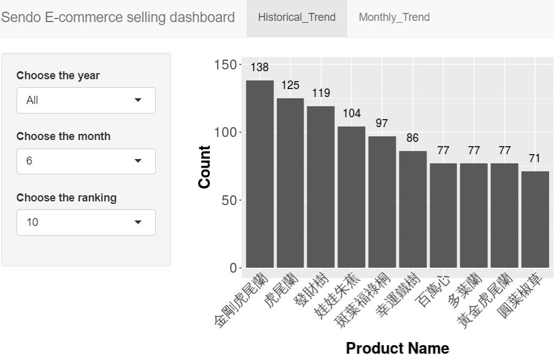

陳思瑋
資料工程師 / 計畫主持人
生態學碩士畢業，熟悉R與SQL。 具備3年的資料工程、資料處理、建模與視覺化經驗。 負責帶領4人開發農產品價量查詢視覺化平台與農業統計調查線上檢誤系統。
技能
R
85%
Microsoft SQL
75%
Geographic Information System
60%
Web Develop
50%
Project Management
45%
Python
40%
BI Tools (SAS VA; Tableau)
30%
工作經驗
2017年4月至今 (共1年4個月)
助理研究員
財團法人農業科技研究院農業政策研究中心，台北市。
專案 1: 農產品價量查詢平台開發
帶領組員開發農產品價量查詢平台，分配工作內容(開發規格書之建立、資料品項確立、API串接、靜態網頁佈署...等)，呈現農產品價量分布圖。
PM
python
django
web develop
專案 2: 農業勞動力調查
帶領組員開發農業勞動力調查線上資料檢誤系統。
撈取API資料，進行資料串接，供資料分析師使用。
將調查結果依據特徵值(經營類別、經營規模、土地面積...等)，建立8,000筆農戶資料的事後分層，供資料分析師使用。
PM
R
c#
django
web develop
專案 3: 農業政策資料庫管理
整合6個農業政策資料庫(約100萬筆資料)，以ArcGIS繪製全國重要農產品生產地圖。
分配名6名同仁管理30個農業資料庫，並以gitbook發表資料庫架構與描述。
R
MSSQL
gitbook
2015年8月 至 2017年3月 (共1年8個月)
研究助理
財團法人農業科技研究院農業政策研究中心，台北市。
專案: 主力農家所得調查
分配20名調查員於全台各地，進行1,000戶的主力農家所得調查。
根據調查結果將特徵值進行事後分層，供資料分析師使用。
R
MSSQL
2014年3月 至 2015年7月(1年6個月)
研究助理
東吳大學海量資料分析研究中心，台北市。
專案: 校務資料分析研究提案
分析東吳大學各系所學生之入學高中、入學成績與在校成績之關聯性。
R
BI tools
學歷
2009年9月 至 2012年2月
生態學碩士
東海大學生命科學所，台中市。
論文: 不同程度的颱風擾動環境下森林生態性樹形與林冠特徵之分化
從樣區母體資料(350,000筆)取樣3,500筆植株，產生植物地圖，進行野外調查，採集植物樹形與林冠特徵。
使用無母數分析、最大概似法、主成分分析，比較個體間、小樣區間、森林間之植物樹形與林冠特徵之異同。
2005年9月 至 2009年7月
生物學學士
東海大學生命科學系，台中市。
最佳論文宣讀獎 - 蜘蛛為什麼色成這個樣子 - 2009年動物行為學暨生態學研討會。
興趣
排球
第2名 - 2011年第38屆全國大專院校生物學系排球錦標賽。
第6名 - 2011年東海大學系際盃排球錦標賽。
重量訓練
舉重
參與活動
104人力銀行黑客松 (2018年7月)
根據使用者瀏覽104網站之行為，預測使用者最有可能點擊的職缺。
推薦系統
漁克松 (2018年2月)
開發預警訊息提示系統之原型，自動提供船隻所進入漁業保護區訊息。
(連結)
網路服務
農業創新黑客松 (2017年12月)
建立Line機器人，推送最便宜食材之零售商通路，並推薦食譜。
(github)
(簡報)
手機與網路服務
作品集

水耕植物電商銷售報表
R-shiny app
健身紀錄
Web develop